Book spiritual rituals and puja services online with experienced and verified Pandit Ji.
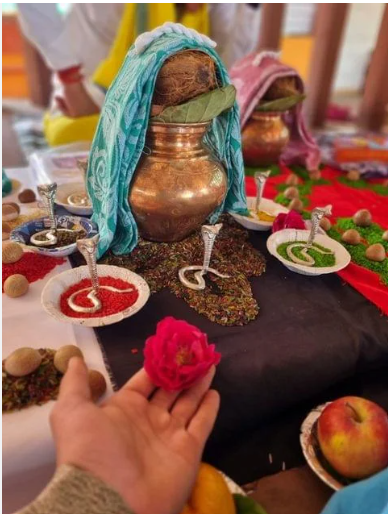
उज्जैन में सत्यापित पंडितों द्वारा रुद्राभिषेक और हवन सहित प्रामाणिक काल सर्प दोष निवारण पूजा बुक करें... और पढ़ें
अभी बुक करेंBook an authentic Kaal Sarp Dosh Nivaran Pooja in Ujjain with verified pandits.... Read more
Book Now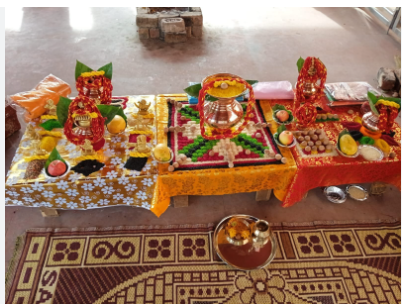
जब परिवार के पितर (पूर्वज) अतृप्त रह जाते हैं — किसी अकाल मृत्यु के कारण, या अधूरे रह गए संस्कारों के चलते....और पढ़ें
Book NowWhen a family's ancestors (pitras) remain unsettled — due to an untimely death, or rites that were never completed...Read more
Book Nowजब जन्म कुंडली में कोई ग्रह कमजोर, पीड़ित या वक्री स्थिति में हो — चाहे वह शनि की साढ़ेसाती हो, राहु-केतु की उलझन हो....और पढ़ें
Book NowWhen a planet in your birth chart is weak, afflicted or retrograde — whether it's Shani's Sade Sati...Read more
Book Now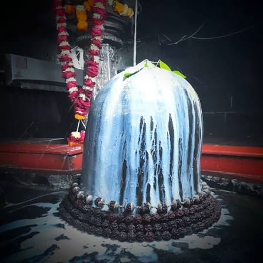
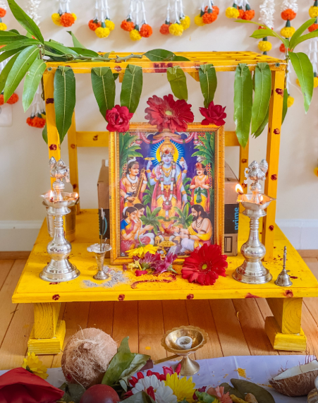
"सत्य ही नारायण है" — इसी भाव के साथ भगवान विष्णु के इस स्वरूप की पूजा घर में सुख-शांति...और पढ़ें
Book NowA puja families turn to when a wish is fulfilled, a new home is entered, or simply to thank Bhagwan Vishnu for His grace...Read more
Book Now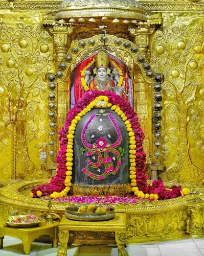
द्वादश ज्योतिर्लिंगों में प्रथम श्री सोमनाथ महादेव के पावन धाम में शास्त्रोक्त वैदिक रुद्राभिषेक एवं दर्शन पूजा बुक करें... और पढ़ें
अभी बुक करेंWhere Chandra Dev himself received Lord Shiva's divine blessing… now a scripture-ordained Vedic ritual will be performed in your name and gotra... Read more
Book Now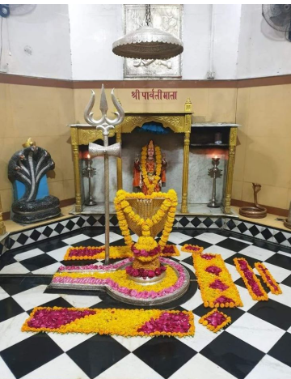
जहाँ भगवान शिव ने भक्त सुप्रिय की रक्षा हेतु दारुक राक्षस का संहार कर "नागेश्वर" रूप में स्वयं प्रकट होने का वरदान दिया... और पढ़ें
अभी बुक करेंWhere Lord Shiva slayed the demon Daaruka to protect his devotee Supriya…... Read more
Book Now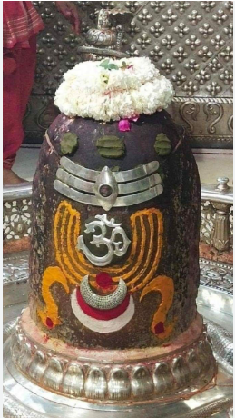
जहाँ स्वयं काल के अधिपति भगवान शिव, बालक भक्त की रक्षा हेतु "महाकाल" रूप में प्रकट हुए और सदा के लिए उज्जैन नगरी में विराजमान हो गए... और पढ़ें
अभी बुक करेंWhere Lord Shiva, the very master of time, appeared in the form of "Mahakal"…... Read more
Book Now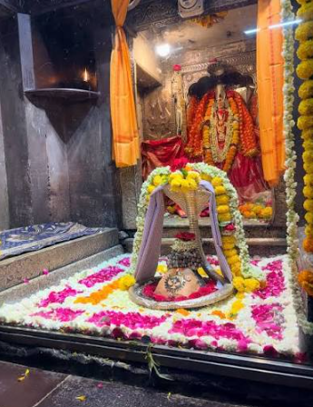
जहाँ नर्मदा नदी की गोद में स्वयं 'ॐ' आकार धारण करके भगवान शिव प्रकट हुए... और पढ़ें
अभी बुक करेंWhere Lord Shiva himself appeared in the sacred embrace of the Narmada river…... Read more
Book Now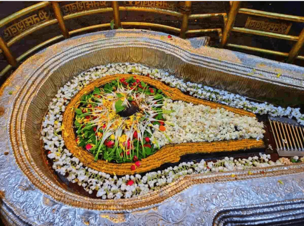
जहाँ भगवान शिव ने स्वयं दैत्य त्रिपुरासुर का संहार कर भक्तों की रक्षा की थी... और पढ़ें
अभी बुक करेंWhere Lord Shiva himself vanquished the demon Tripurasura to protect his devotees…... Read more
Book Now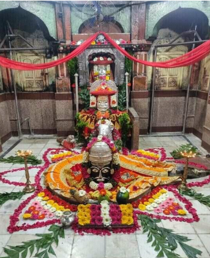
जहाँ स्वयं भगवान शिव ने रावण को स्वस्थ कर 'वैद्यनाथ' रूप में चिकित्सा का वरदान दिया…और पढ़ें
अभी बुक करेंWhere Lord Shiva himself healed Ravana and blessed him with the power of medicine as 'Vaidyanath'…... Read more
Book Now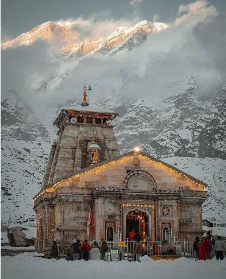
जहाँ पांडवों ने स्वयं भगवान शिव की आराधना कर मोक्ष प्राप्त किया था…और पढ़ें
अभी बुक करेंWhere the Pandavas themselves worshipped Lord Shiva and attained liberation... Read more
Book Now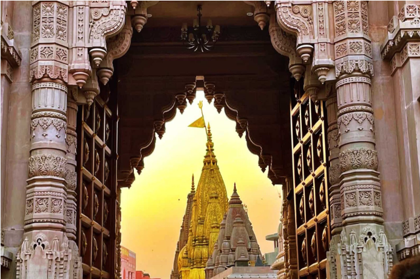
जिस मोक्षदायिनी काशी नगरी को स्वयं भगवान शिव ने अपना निवास चुना…और पढ़ें
अभी बुक करेंIn the very city of Kashi that Lord Shiva himself chose as his eternal abode — a scripture-ordained... Read more
Book Now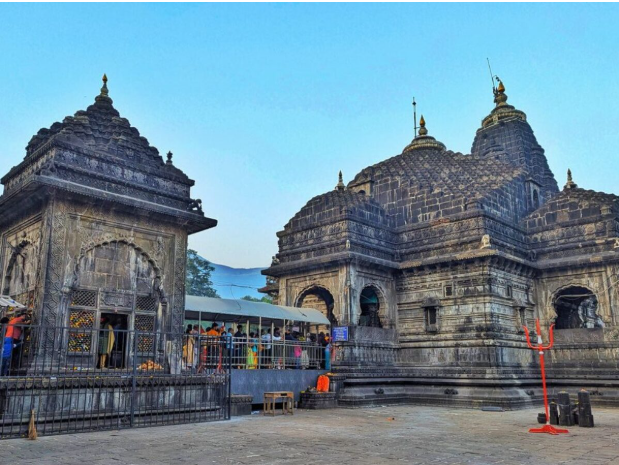
जहाँ पवित्र गोदावरी नदी — दक्षिण गंगा — स्वयं ब्रह्मगिरि पर्वत से प्रकट होकर बहती है….और पढ़ें
अभी बुक करेंWhere the sacred Godavari river — the Dakshin Ganga — springs forth from Brahmagiri mountain itself…... Read more
Book Nowजिस पावन भूमि पर भक्तिन घुश्मा की अटूट शिवभक्ति से स्वयं भगवान शिव प्रकट हुए….और पढ़ें
अभी बुक करेंOn the very sacred land where Lord Shiva himself appeared in response to the unwavering devotion of Bhaktin... Read more
Book Now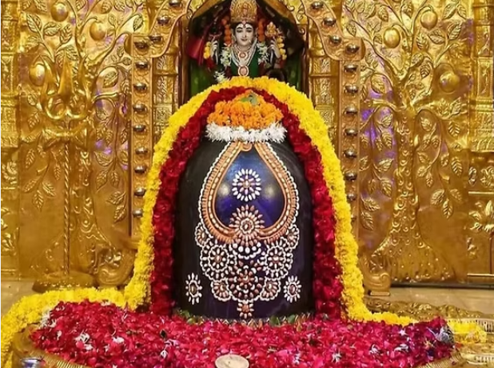
जहां भगवान शिव स्वयं कार्तिकेय को खोजते हुए माता पार्वती सहित पधारे….और पढ़ें
अभी बुक करेंWhere Lord Shiva himself, along with Goddess Parvati, came searching for Kartikeya and settled forever atop the…... Read more
Book Now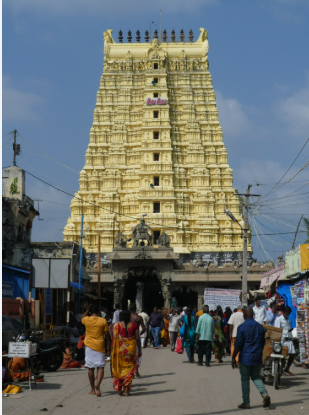
जहाँ स्वयं भगवान श्रीराम ने लंका विजय से पूर्व शिवलिंग स्थापित कर आराधना की थी… और पढ़ें
अभी बुक करेंWhere Lord Shri Ram himself installed and worshipped a Shivling before his victorious campaign to Lanka…... Read more
Book Now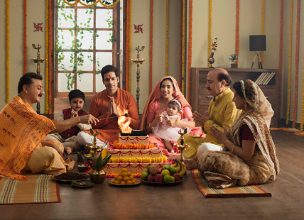
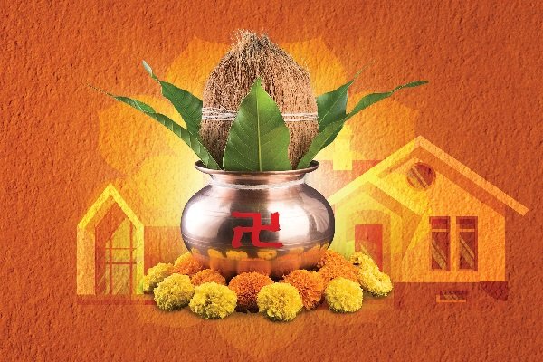